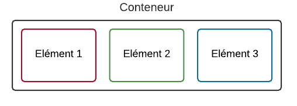
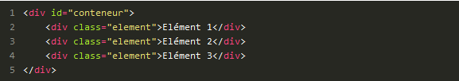
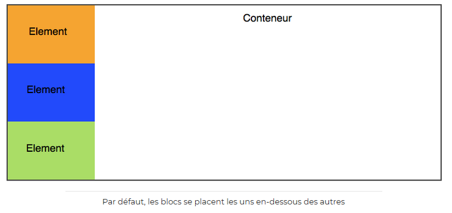
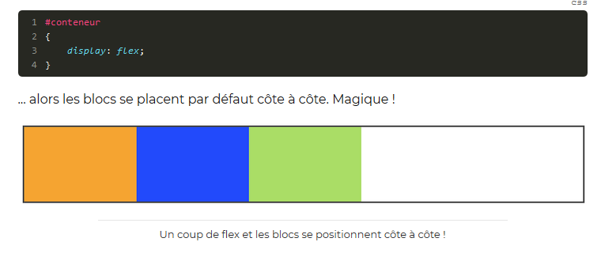
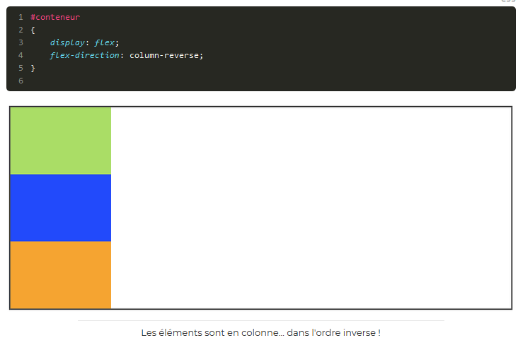

Faire une mise en page avec FLEXBOX
Nous allons découvrir le fonctionnement des FLEXBOX
Un conteneur, des éléments
=>le principe de la mise en page avec Flexbox est simple: vous définissez un conteneur, et à l'interieur vous placez plusieurs éléments(imaginez un carton dans lequel vous rangez plusieurs objets.)
Sur une même page vous pouvez avoir plusieurs éléments .
Etudions le fonctionnement
Le conteneur est une balise HTML, et les éléments sont d'autres balises HTML à l'interieur
mais si je fais comme cela, mes éléments vont se mettre les uns en dessous des autres.Ce sont des blocks.
je vais mettre une bordure,une taille et une couleur de fond aux éléments et on va observer leur organisation.
Rien de nouveau c'est le comportement normal.
Aller soyons Flex
Si je mets une(une seul!)propriétéCSS toutv change Cette propriété c'est FLEX, et je l'applique au conteneur:
la direction
Flexboxpermet d'agencer ces éléments dans le sens que l'on veut. Avec flex-direction, on peut les positionner verticalement ou encore les inverser. il peut prendre les valeurs suivantes:
- row:organisées sur une ligne
- column:organisés sur une colonne
- row-reverse:organisés sur une ligne
- column-reverse:organisés sur une colonne, mais en ordre inversé.
Essayez de tester l'ordre inversé pour voir
Retour à la ligne
par defaut, les blocs essaient de rester sur la même ligne même s'ils n'ont pas la places cela peut produire des bugs de design parfois. Pour qu'ils aillent à la ligne lorsqu'ils n'ont plus de place. On utilise flex-wrapqui prendre ces valeurs:
- nowrap: pas de retour à la ligne(par defaut)
- wrap: les éléments vont à la ligne lorsqu'il n'y a plus de place
- wrap-reverse: les éléments vont à la ligne lorsqu'il n'y a plus la place en sens inverse
Ceci n'était qu'une petite initiation aux flex.Je vous invite à vous renseigner et faire des tests